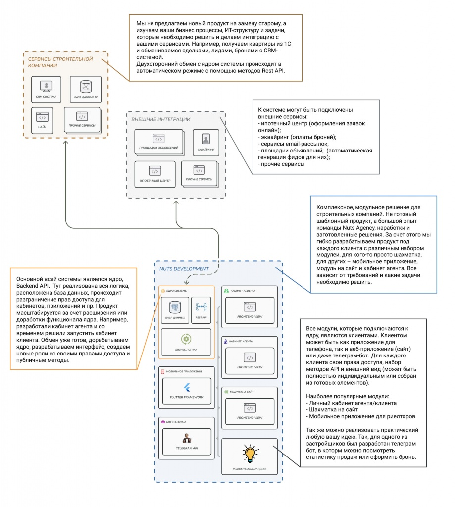

О продукте
Наш продукт – это не шаблонное решение, под которое необходимо адаптировать бизнес-процессы, отдел продаж и переучивать сотрудников, а индивидуальная разработка для вашей компании. Самое главное наше преимущество – невероятная гибкость разработки. В вашей, да и любой другой компании, годами складывались и оттачивались бизнес-процессы, которые отлично работают. А если что-то работает, зачем ломать? Мы погружаемся в ваши процессы, используем весь накопленный опыт разработки, готовые модули и адаптируем их для эффективного решения ваших задач.
Общий принцип работы платформы
Итак, что же представляет из себя наше “IT-решение для застройщиков”? Давайте ознакомимся со структурой продукта. Как мы уже говорили, мы адаптируем разработку под существующую ИТ-архитектуру и бизнес-процессы компании, поэтому в нашем продукте есть три основных блока:
- Сервисы строительной компании – те сервисы и инструменты, которыми вы уже пользуетесь и привыкли к ним. Как правило, это 1С с базой данных квартир, CRM-система со всеми заявками, клиентами, сделками, телефонией и внутренними задачами, ваши сайты и прочие продукты.
- Внешние интеграции – площадки объявлений, эквайринг, сервисы рассылок email или sms, ипотечный центр. В эту категорию относим облачные сервисы, которые нельзя развернуть на своем сервере, но они предоставляют инструменты для интеграции.
- Nuts development – наш продукт, состоит из ядра (мозг системы) и набора различных модулей, от telegram-бота до сложной шахматки или мобильного приложения, все зависит от фантазии и решаемых задач. Мы уже запускали ботов, шахматки, личные кабинеты, мобильное приложение и готовы реализовать новые идеи.
Теперь давайте разберемся, как эти блоки взаимодействуют между собой. Сервисы строительной компании – первоисточник данных, отсюда мы получаем квартиры, брони, сделки и всю необходимую информацию. Ядро Nuts development обрабатывает и обменивается информацией с вашими сервисами и внешними интеграциями.
Рассмотрим классический пример – модуль шахматки для CRM системы. Сначала ядро производит обмен с вашей базой данных и получает список квартир с ценами и сопутствующей информацией, далее обрабатывает данные, сохраняет и кэширует. К ядру с помощью методов API подключается модуль CRM-системы и выводит сохраненные ранее данные. Сам модуль встраивается в вашу CRM-систему. Теперь в CRM доступна шахматка, в которой можно подобрать квартиру, ознакомиться с ценами или отправить заявку на бронь.
Для наглядности мы подготовили упрощенную структуру проекта, можете ознакомиться с ней и далее мы поговорим о функционале каждого элемента отдельно.
